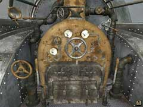
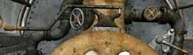
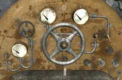
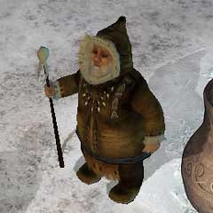

|

オスカーの心を開いたあなたは、機関車を動かし船を覆う氷を溶かさなくてはならない。そう、もはや機関車の役割は終わろうとしているのだ。 オスカーの胸から手に入れた「ボラルバーグの鍵」を操縦室の鍵穴にさそう。これにより、いくつかのレバーやハンドルが動かせるようになる。 まずは、説明から。 画像の左下にあるハンドルは、エンジンに空気を送る弁の開閉をするものである。

まず、操縦室上部の二つのレバーを見て欲しい。左のレバーは石炭や水を動力部に送るための吸引装置を制御する。右のレバーは、吸引装置を機関車の上から出すか下から出すかを制御する。

中央のハンドルの右にある2つのスイッチは、吸引装置のオン・オフを制御する。このスイッチを動かすことにより、吸引装置は水や石炭などを吸い込む。 左側にある小さなハンドルは、熱せられた水蒸気を機関車内部に伝達する弁を制御する。これを回すことで、機関車から蒸気が出てくるだろう。 そして、左のスイッチは機関車前方に付いている上記を噴出する装置を制御している。 手順としては、石炭の確保、水の確保、エンジンに空気を送る、水蒸気を送る、噴射の順である。

船の氷が溶けたら、実際に船を見に行こう。ハンスがすでに乗っているはずだ。 ここで、船のそばに発っている村の村長に話しかけてみよう。彼が、船の前に立ちふさがる扉を開けるための条件を教えてくれる。その条件とは、あまり難しくないはずだ。
| << 前へ |
|